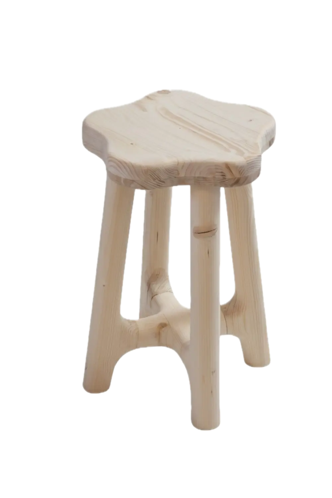
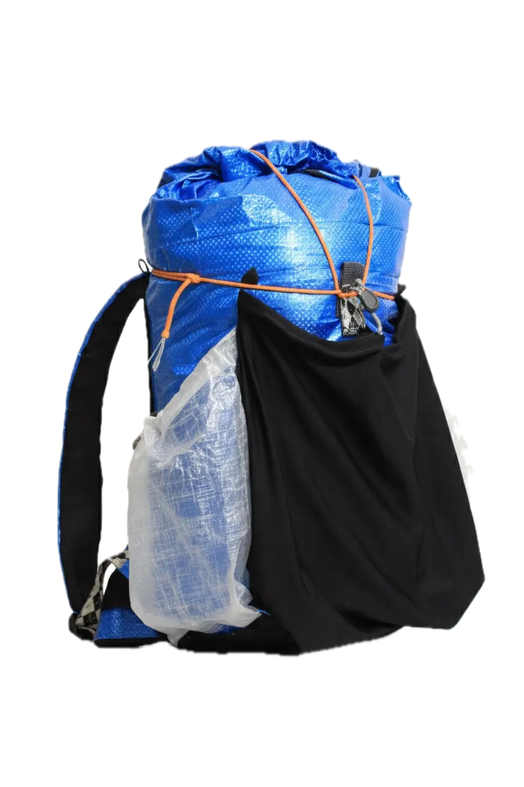

Plus qu'un tabouret, une nouvelle vision.
Voila certainement la plus belle piece de ma main. Pour ce projet l'inspiration me viens principalement d'un youtubeur du nom de MakeWithMiles.
Je suis d'abord parti de morceaux de bois carré. Je les ai assemblés pour faire la forme globale. Et ensuite je les ai arrondis à l'aide d'une défonseuse d'abord, puis d'une ponceuse principalement.
Voir le projet

Un sac à dos... original.
Style de sac à dos alpinisme/ultralight
- Tissus utilisés : toile de sac cabas IKEA, t-shirt de sport noir (mesh), sac de couette transparent (poches latérales), lycra (poche de devant et poche élastique)
- Compartiment principal avec fermeture roll-top et fermeture verticale
- Petite poche intérieure fermée pour les petits objets importants (avec crochet pour les clés)
- Trois grandes poches extérieures : deux latérales pour les gourdes et une centrale élastique pour les vestes et autres affaires
- Poche à la ceinture (hipbelt pocket)
Voir le projet

About me.
J'ai ans et jours, j'adore fabriquer toutes sortes d'objets, j'ai plein d'idées… mais pas beaucoup de temps.
J’ai comme but dans la vie de fabriquer tous les objets dont j'ai un jour besoin, même mes chaussettes.
Depuis le début de mon existance, j'ai toujours aimé fabriquer des objets, mais c'est depuis le confinement du COVID-19 que j'ai réellement commencé à m'exprimer. Maintenant dès que j'ai une idée, j'essaye de la fabriquer. J'adore ça et en plus, ça me permet de développer ma créativité.
J'ai passé beaucoup trop de temps à regarder des vidéos YouTube, mais au moins j'ai appris des techniques et j'ai pris pas mal d'inspiration.
Du coup au final j'ai l'impression d'avoir appris pas mal de choses en essayant de fabriquer tout ce qui me passe par la tête. Voici une liste non exhaustive de ce que je sait faire (ou presque faire):
Menuiserie
Couture
Photographie
Dessin
Modélisation 3D
Électronique
Développement de site internet
Design graphique
Ratouche photo
Si je fais ce portfolio, c'est surtout pour rassembler tous les projets que j'ai faits en un seul endroit, pour me souvenir des choses, des belles choses que j'ai faites, mais aussi des certaines qui sont moins bien (bon… Je vais peut-être pas vous montrer tous les ratés quand même).
C'est également un défi pour moi de créer un site internet. J'essaie de le faire entièrement tout seul. Mais c'est pas très facile de le rendre beau. C'est pourquoi j'ai opté pour un design plutôt simple en essayant de l'améliorer petit à petit.